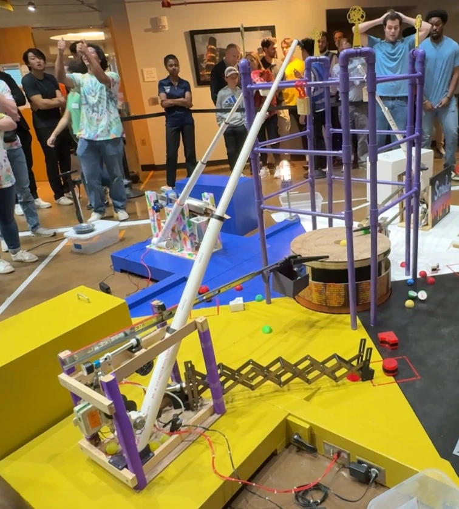
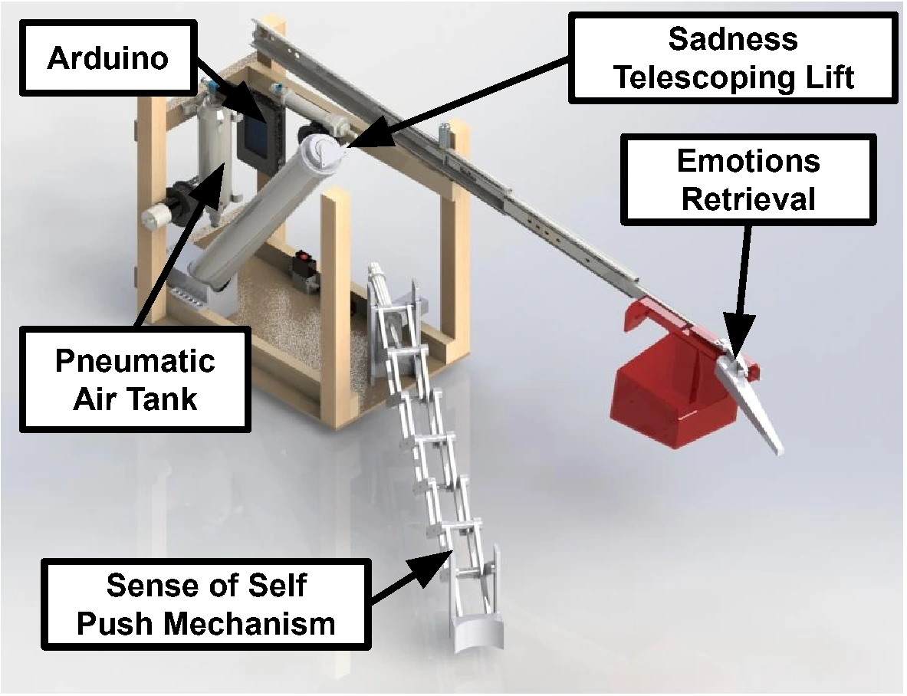
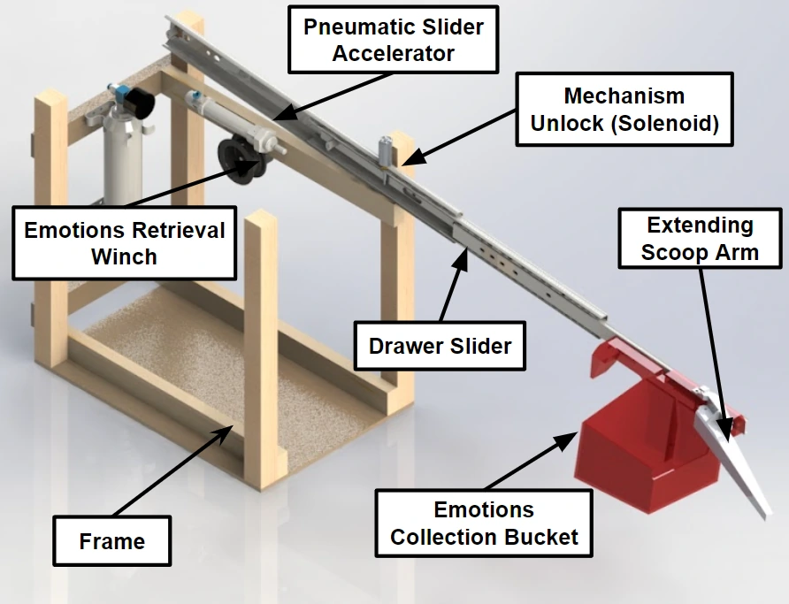
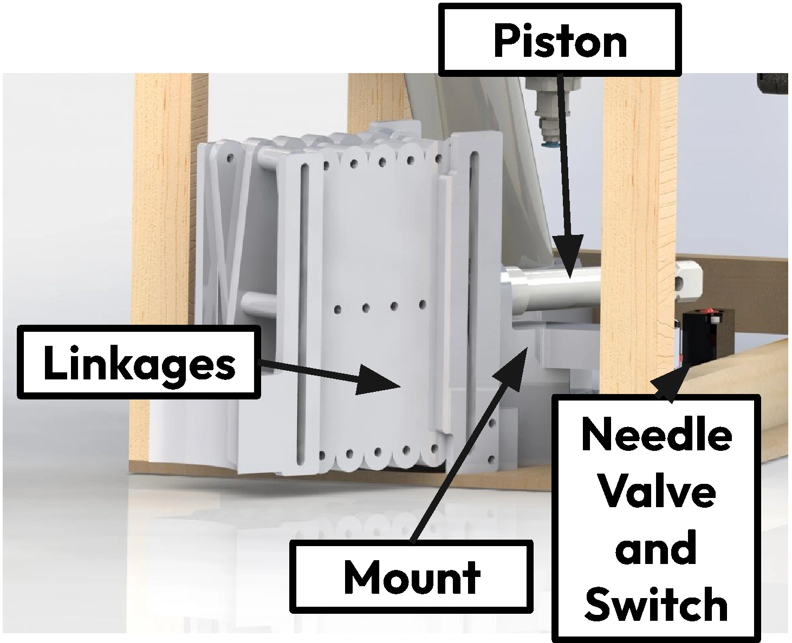
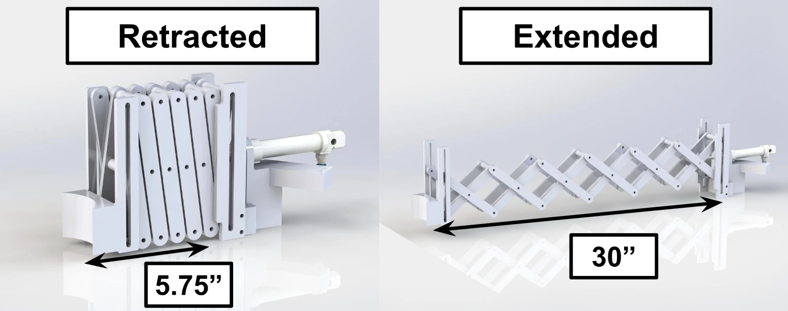
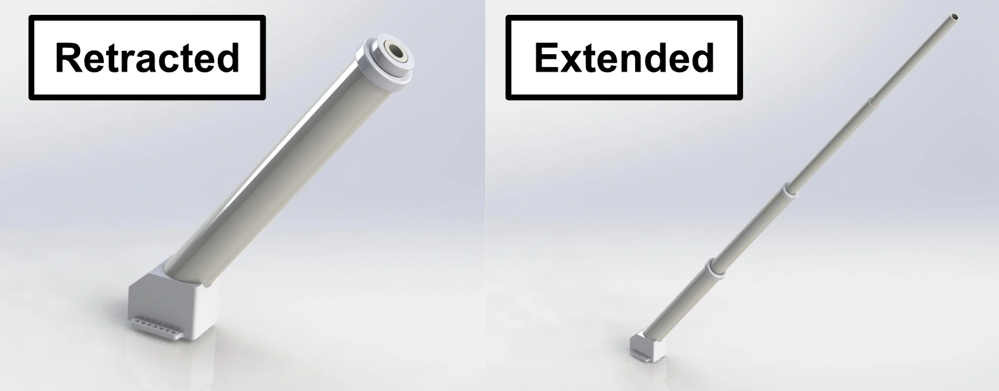
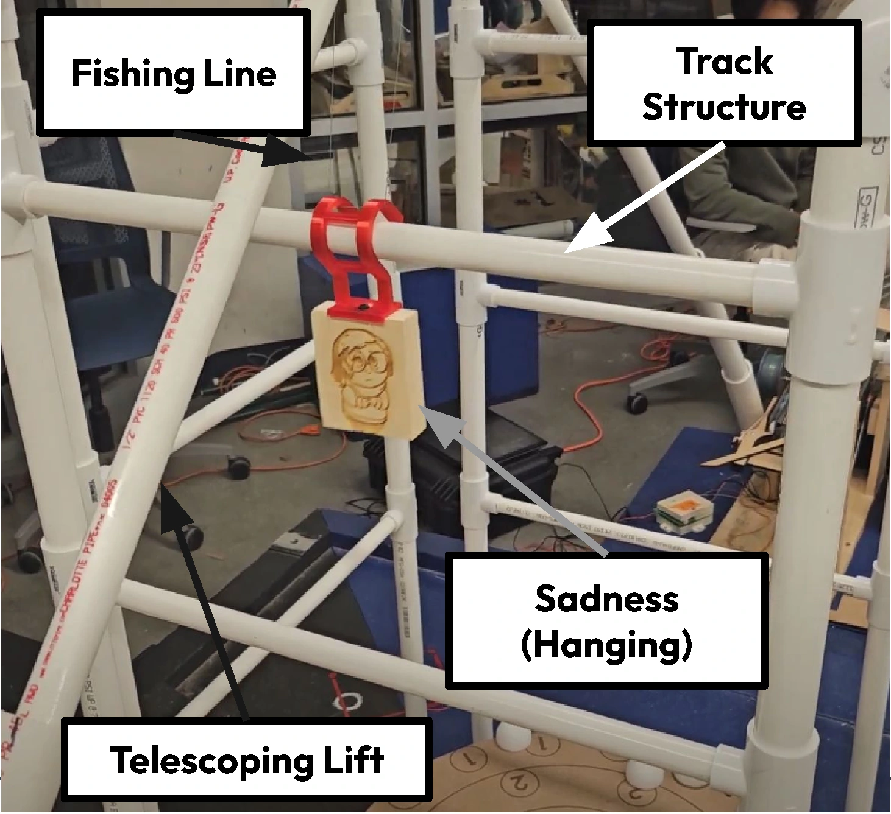
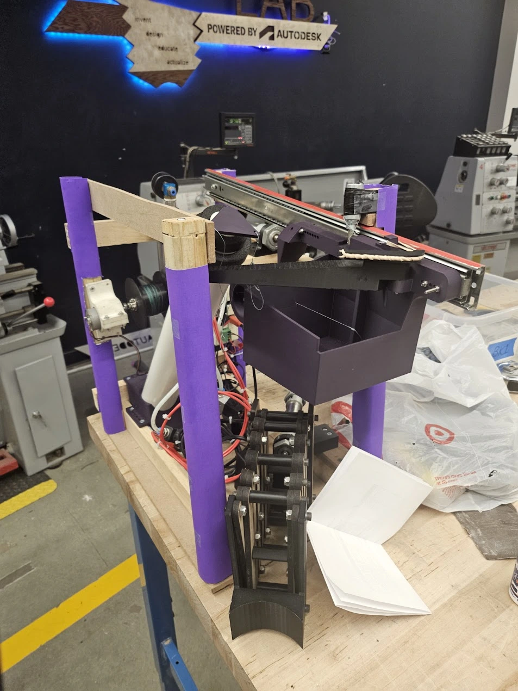

Mind-inator competition robot
A timed electromechanical robot for Georgia Tech’s ME 2110 competition


Overview
Our three-person team built Mind-inator for a 40-second, Inside Out 2-themed competition. A telescoping lift, pneumatic scissor mechanism, and sliding retrieval arm completed three game tasks from a stationary base.
I contributed to mechanism CAD, fabrication, and Arduino-controlled actuation. I also developed the preferred-design write-up and rendered CAD figures for our final report. We prioritized reliable deployment, but competition runs exposed bouncing in the retrieval arm and a limited scoring ceiling.
Mechanisms and hardware





